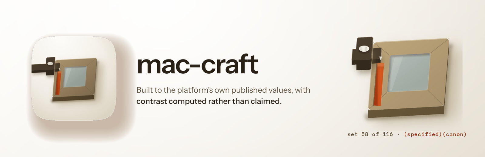
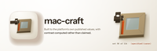
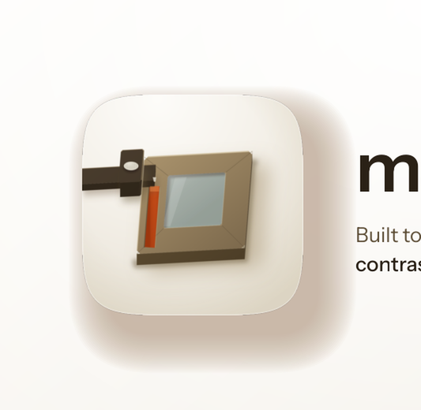

Every size a person actually meets this banner at, then the 12-point rubric. Delivery bar is 10 of 12 with checks 1, 2, 3, 7 and 12 non-negotiable. 5 of 5 mechanical checks pass and 7 still need a human verdict, which is what the renders above are for.



| # | Check | Verdict | Evidence |
|---|---|---|---|
| 1 | Exactly 3200x1040, from a 1600x520 layout at deviceScaleFactor 2 (non-negotiable) | pass | 3200x1040 |
| 2 | The plugin's real icon asset, referenced rather than redrawn (non-negotiable) | pass | 1 artwork reference inlined as a data URI, which is how a file:// render loads it at all |
| 3 | The wordmark is set in a linked web font, not a local system face (non-negotiable) | pass | loads IBM Plex Mono, Instrument Sans |
| 4 | Ground register agrees with the icon it sits beside | — | judged by eye on the renders above; fill this in |
| 5 | One warm accent, carried from the icon's own accent constant | — | judged by eye on the renders above; fill this in |
| 6 | Composition derived from the icon's build script, not eyeballed from a sibling | — | judged by eye on the renders above; fill this in |
| 7 | One essence line, no em dash (non-negotiable) | pass | no em dash in the copy |
| 8 | Nothing overflows the frame | — | judged by eye on the renders above; fill this in |
| 9 | Wordmark and essence line both legible at 900px | — | judged by eye on the renders above; fill this in |
| 10 | Wordmark legible at 400px | — | judged by eye on the renders above; fill this in |
| 11 | No element illegibly overlapping another | — | judged by eye on the renders above; fill this in |
| 12 | banner-src retained, so the banner stays editable (non-negotiable) | pass | banner-src.html |
5 / 12
**Ships, and it is the weakest of the four at small sizes.** Every point goes through `build_icon.py`'s own `P()`, `quad()`, `chamfered()`, `wall()`, `poly()` and `lin()`, so the cavalier oblique is the icon's basis rather than an impression of it: `E1` (1, -0.055) and `E2` (-0.075, 0.955) are untouched, because a basis is not a length, and every plan length is the icon's constant at one factor of 0.50. `UW` 500, `VH` 470, `STILE` 116, `RAIL_TOP` 96, `RAIL_BOT` 118, `WALL` 52, `CORNER` 16, `REBATE` 26, and the gauge's `STOCK_UD` 106, `STOCK_H` 66, `BEAM_W` 76, `BEAM_H` 30 and `SCREW_R` 34 all carry through, as do the mark's `PIN_U` 58 of the stile's 116, `LINE_V0` 143 to `LINE_V1` 442 and `LINE_W` 46. The mark's position is therefore still a consequence of the registration rather than a decision about where a line looks good. The ground falls at 141 degrees, which is `atan2` of the shade direction `KEY_A` to `KEY_B` produces, and the tile's contact shadow is the icon's measured pair rather than a dark blob: a wide shallow `POOL` at -0.058 L and a narrow `SEAT_DARK` at -0.114.
**One declared deviation, and only one.** `BEAM_U0` is -400 in the icon so the gauge's tail runs off the tile and is cut by the mask, which the icon's own notes argue reads as a boundary where a tail stopping just inside the mask reads as an accident. A banner has no mask there, so the tail is cut back to just past the stock instead. Nothing else in the geometry was changed.
**Known liabilities.** This device carries the most parts of the four and it loses the most on the way down. At the 400px catalogue card the gauge collapses into an indistinct dark blob at the sash's top left, so the registration that is the entire argument is unavailable and what remains is a timber frame with one vermilion bar. The provenance line, `set 58 of 116 (specified)(canon)`, is set at 18px and is unreadable below about 700px, so mac-craft's own thesis reads only at README width and above. Second, this banner inherits the icon's known value-separation problem rather than fixing it: timber against porcelain is the case the icon's notes record as failing icon rubric 7 at 1.40:1 on the reference raster, and the master's response was to walk the timber down the ramp rather than converge on the ground. On a porcelain banner the frame sits at roughly that same separation, so the sash reads as a light object on a light field and depends on its walls and its seat for the read. Third, the sash is shown whole rather than cropped, which makes it the largest and busiest of the four devices, and at 200px it is the one whose silhouette says least. Verified by eye rather than by assertion: the scribed line is the only straight vermilion anywhere on the page at every size, and the pane's cool grey is the only non-warm hue, both of which hold down to 200px.